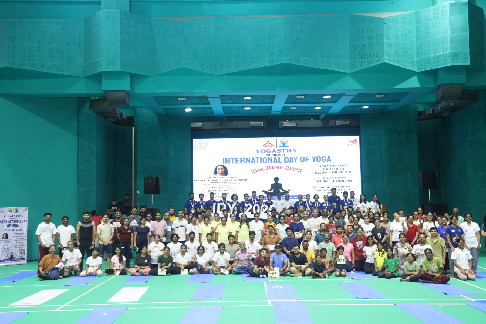
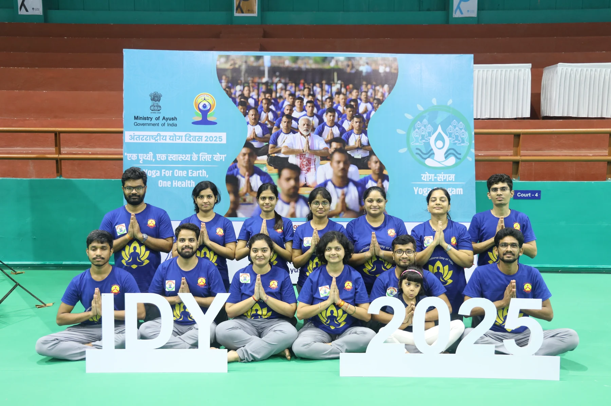
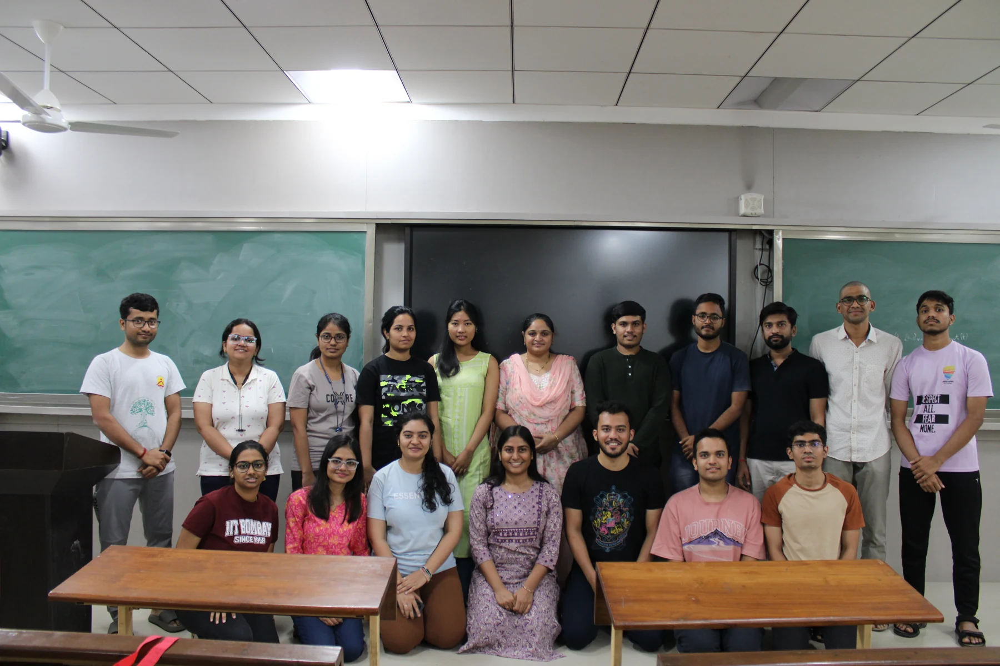
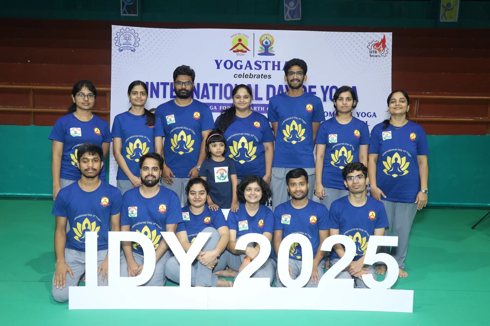
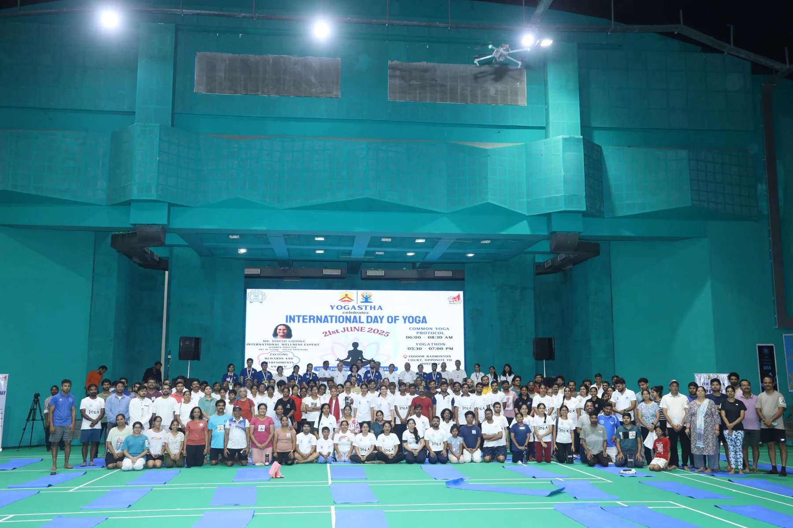
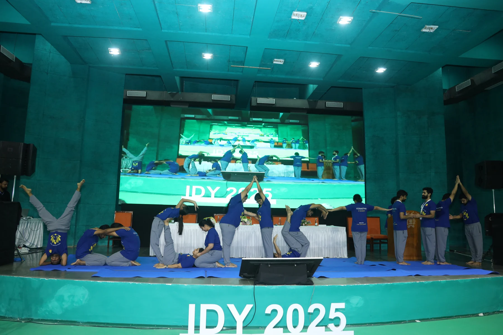

Hatha Yoga
Postures and the foundations of physical practice.

A little space to arrive.
A practice to return to.
Yogastha / Yoga & Wellness Club
That is the meaning of Yogastha. Since the first International Day of Yoga, on 21 June 2015, IIT Bombay’s Yoga & Wellness Club has made space for practice within the Students’ Gymkhana.
Its purpose is simple: bring students together through yoga, awareness and a shared interest in wellbeing.
Find your practiceसमत्वं योग उच्यते।
Samatvam Yog UchyateEquanimity is Yoga.
The practice / The place
Movement. Breath. Attention.
The club archive describes several ways to practise, with instruction and equipment to support a session.
Postures and the foundations of physical practice.
Attention to the breath as part of guided practice.
Sessions that make space for stillness and awareness.
A practice the archive lists alongside the use of supportive props.
Ways to come together
From regular sessions to a campus gathering. These are the activities recorded in the club archive; ask the club what is coming next.
Regular practice, themed workshops and de-stress sessions bring different approaches into the room. The archive includes Chakra Meditation, Sahaja Yoga and camps with Swasti Yoga Centre.
Longer shared events that bring the community together around yoga and participation.
A yearly point of connection with the club’s beginnings. Campus celebrations, group practice and demonstrations are part of its recorded story.
Creative meme and video challenges, media work and outreach give members other ways to contribute to the club.
The source gives differing descriptions of session frequency. Check the current timetable with the club before visiting.
A continuing practice
A few moments from the institutional record. Dates belong to the archive, rather than a current programme or roster.
The club’s inception coincides with the first International Day of Yoga.
The archived timeline records ongoing yoga practice and sessions from 2018.
The club archive reports selection for the final round of the Yoga for Life: Lifestyle for Environment Conference in Tbilisi, Georgia.
The dated record names Shubham Giri, Jitendra Sharma, Deepika Meena, Vamsi Triveni, Nainsi Gupta and Nidhi Verma.
A historical list from the archive; current appointments and qualifications have not been verified.
The people / In photographs
The club is the people who show up. Six photographs from the original Yogastha gallery, preserved with their own story.






Original institutional photographs. Visible event signage is described where present; participant identities, exact dates and venues are not inferred.
Get involved
Ask about the next practice, the right entry point for you, and what to bring. The club or sports office can confirm current arrangements.
Visit the institutional club pageThere is room to begin.
And a community to return to.
The pavilion is an original illustrative space, not a reconstruction of the New SAC Yoga Hall. Its archived address appears above.
The people and photographs are from Yogastha’s institutional archive. Visit the source ↗
Keep discovering
Find your place. ↗